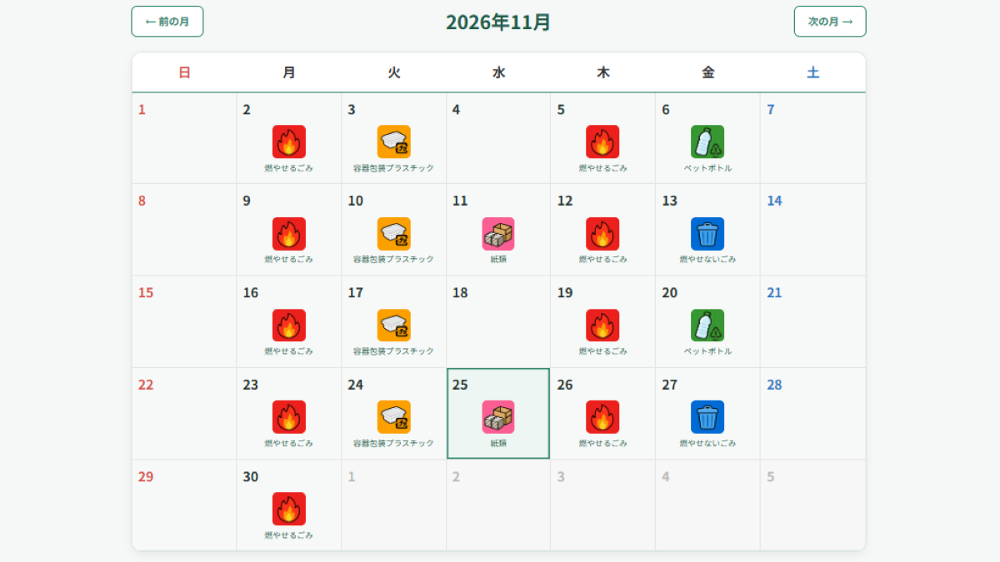

ながさきごみナビ

制作年：2026
使用技術：HTML / CSS / JavaScript / Cloudflare Worker / Cloudflare Workers AI
＜概要＞
長崎ハッカソン2026にてCyber研究会bチームとして作成した作品(ChoTech賞を受賞)
長与町、長崎市のごみ分別カレンダー、AI判定、通知機能などを実装した非公式のごみ出しサポートツール
＜工夫した点＞
長与の拠点回収の日程をカスタムしてカレンダーに追加できる点
通知をDBで管理した点
AIでの検索は対応する仕分けの基準もセットで送ることで精度を高めた点
レスポンシブデザインにした点
公式ラインを用いた通知機能を実装した点